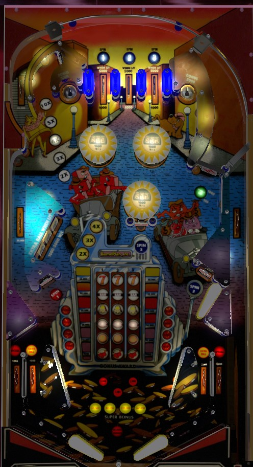

If you expect to be able to play Agents 777 for a long time, focus your early game on building end of ball bonus from top lanes, standup targets, and drop targets; every 40 advances is a super bonus that carries over from ball to ball. Bonus multipliers are earned from completing the top lanes, completing the drop targets, or making the curved standup target in the upper left; bonus multiplier is the sum of the yellow multiplier from drops and white multiplier from the top of the table. If Agents 777 is set difficult, go for quick and easy points by shooting the top saucers to score a slot machine value of up to 150,000.
At the start of the game, the 3 slot machine reels- indicated by the columns in 3x6 grid of center playfield inserts- are not yet activated. Make the Spin 1 top lane, the Spin 1 standup target in the lower left, or the leftmost drop target to activate the left reel. Spin 2 top lane, center drop target, and center standup target activate the center reel, while Spin 3 top lane, Spin 3 lower right standup target, and rightmost drop target in the 3-bank activate the right reel. If a reel has been activated, making that reel's lane or target again will toggle whether it is moving or stationary. Making either of the two top saucers at any time scores the Reels Bonus, which is equal to the value of the lit symbols on all 3 reels, plus 5,000 points. From bottom to top, lit cherries score 5,000; lit oranges score 10,000; lit grapes score 20,000; lit bells score 30,000; lit Bars score 40,000; and lit 7s score 50,000. The maximum value of the saucer is 155,000 points (the free 5,000 plus three 7s on the reels). If two reels are frozen on the same symbol, they will not be able to be restarted from a lane or target until a saucer value is scored, to allow it to be easier to get all three in a line- if you make a line of three 7s, a siren noise plays, but there does not seem to be any additional scoring for this.
Bonus is advanced by the three top lanes, the three Spin standup targets, and the three drop targets. Lit top lanes, standup targets, and drop targets award 2 bonus advances; if not lit, they give just 1 advance. (Lane change is not available at the top lanes.) Each advance contributes 1,000 points to the base bonus. The maximum base bonus is 199,000 points. There are super bonus levels at 40,000, 80,000, 120,000, and 160,000; when you exceed those values, you are guaranteed to bring that amount of bonus with you to the next ball, but the remainder is reset between balls.
There are two types of bonus multiplier: white and yellow. Both multipliers always reset from ball to ball. To advance the white multiplier, complete the top lanes by rolling through the lanes when unlit; lighting all 3 increases the white bonus multiplier. The white bonus multiplier can also be raised instantly by shooting the short curved lane to the left of the Spin 1 top lane. The white bonus multiplier is advanced in the sequence 2x-3x-4x-5x-10x. The yellow bonus multiplier is advanced with each completion of the drop targets in the sequence 2x-3x-(flashing inserts)-4x. Completing the drop targets when all three inserts are flashing lights the right in lane for extra ball. If neither bonus multiplier is advanced during the course of a ball, the bonus multiplier will just be 1x. However, if either multiplier is advanced at all, the bonus multiplier will be the sum of the white and yellow multipliers. Max bonus, therefore, is 14x 199,000 = 2,786,000 points. There is no mid-ball bonuis collect.
If you expect to be able to play Agents 777 for long enough to earn any super bonus level on ball 1, that should be your main focus. It can be difficult to build the base bonus to a high level, but if you can do so, it is the only route to a truly massive score on Agents 777.
Roll through an unlit top lane to light it. Unlit top lanes score 1,000 points and a bonus advance. Lit top lanes score 5,000 points and a bonus advance.
The far upper left rollover lane scores 50,000 points. Good luck ever ending up here. Making this lane a variable number of times, depending on game settings, lights the out lanes alternately for Special.
The left side lane running behind the drop targets scores 25,000 points. Making this lane a variable number of times, depending on game settings, lights the left in lane for extra ball.
Drop targets score 1,000 points, or 5,000 when lit. The lit 2x, 3x, and 4x inserts for the yellow bonus multiplier also correspond to whether or not a drop target is considered lit.
The right spinner scores 100 points per spin, or 1,000 per spin when lit. Complete the drop targets once to light the spinner.
The Spin 1, Spin 2, and Spin 3 standup targets score 1,000 points and one bonus advance at first. Hitting a Spin standup target lights that target, increasing its value to 3,000 points plus 2 bonus advance, and lights a bumper. Bumpers score 100 points, or 1,000 when lit.
Agents 777 has a conventional in/out lane setup. In lanes score 1,000 points and out lanes score 5,000 points. See above for info on how in lanes can be lit for extra ball and out lanes can be lit for Special. There is a center peg between/below the flippers.